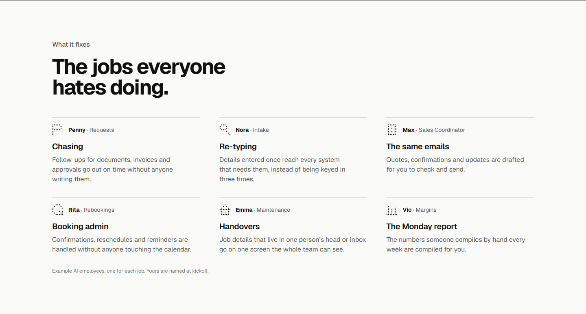
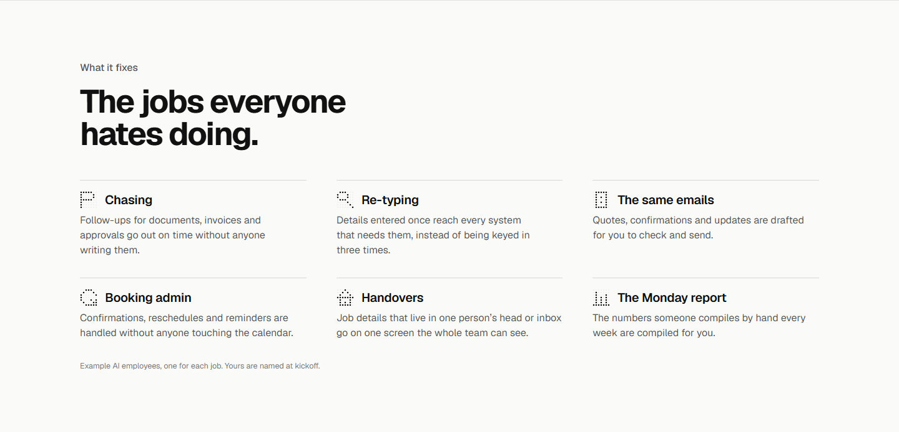
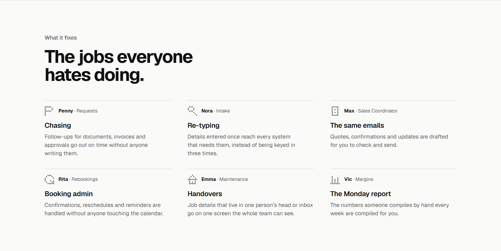
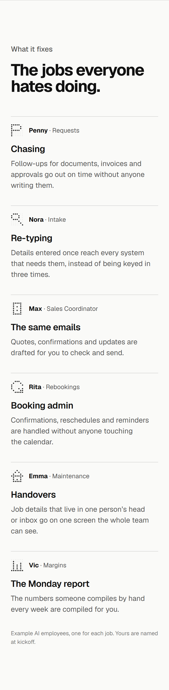
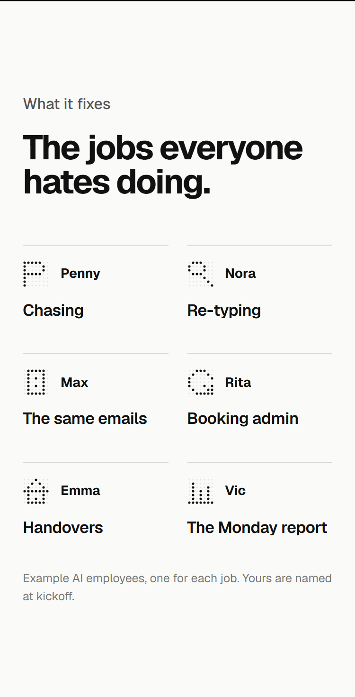

Will picked C on 3 Nov 2026. Three details drawn three ways from the section's own component; option 1 of each is what is built now. The heading and the six sentences were settled on 27 Oct.
Detail 1 of 3, the employee line
1, as built: avatar, name and job (recommended: the job beside the name is the idiom of section 5's dashboard and the homepage roster, so the three read as one system)

2, avatar and name: quieter, but a bare name says less than a name with its job3, the avatar beside the job title, no line: tightest, the employees become icons

Detail 2 of 3, the note under the grid
1, as built: "Example AI employees, one for each job. Yours are named at kickoff."2, shorter: "Example AI employees. Yours are named at kickoff." (recommended: "one for each job" repeats what the grid already shows)3, none: the charter wants examples to say so, so dropping it breaks that rule

Detail 3 of 3, the phone layout
1, as built: six cards stacked, about two screens long

2, two across, no sentence: one screen, the job names and employees only (recommended: the names carry the section on a phone, and the sentences stay on laptops)

3, one column, no sentence: shorter than today, longer than 2